In the previous example we considered a two-dimensional free surface Navier–Stokes problem. The free surface was deformed to a prescribed shape and then allowed to relax. In this example we consider the relaxation of an interface between two viscous fluids.
Implementation
The extension from a single fluid problem to one involving two fluids separated by an interface is very straightforward. As oomph-lib's Navier–Stokes elements are based on the Arbitrary Lagrangian Eulerian form of the equations, and can therefore be used to solve problems in moving domains, we can discretise the domain using a rectangular mesh containing an additional boundary corresponding to the position of the interface. The construction of such a mesh is described below. We also require a method of distinguishing between (and assigning) the physical properties of the two fluid layers.
Boundary conditions at the interface
A discussion of the theory and implementation of the boundary conditions at a free surface is given in the previous example, where we showed that the dynamic boundary condition is given by
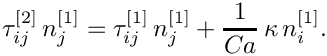
Here 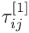 and 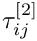 are the stress tensors in the ‘lower’ and ‘upper’ fluids respectively, 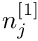 is the unit normal pointing out of the ‘lower’ fluid and is the Capillary number.
The interface conditions in this two-fluid example are implemented in an almost identical way to the single layer case. We employ the same pseudo-solid node-update strategy, where the interior mesh is treated as a fictitious elastic solid and thus the (unknown) nodal positions can be determined by solving a solid mechanics problem. The deformation of the free surface boundary itself is imposed by introducing a a field of Lagrange multipliers at the interface, and the equation associated with these additional unknowns is the kinematic condition. In the single layer case this equation is discretised by attaching FaceElements to the boundaries of the ‘bulk’ elements that are adjacent to the free surface. In this two-layer example we attach the same FaceElements to only those ‘bulk’ elements which are in the ‘lower’ fluid (and have boundaries adjacent to the interface). These same FaceElements are also responsible for adding the surface tension contributions to the momentum equations that arise through the application of the dynamic boundary condition. We note that since we are solving the Navier–Stokes equations on either side of the interface we do not specify an external pressure, a step that was necessary in the single layer case.
The other difference between this problem and the previous example is that we shall be solving this one using spatial adaptivity. We refer to another tutorial for a discussion of how to apply boundary conditions in such problems.
Distinguishing between the two fluids
In a problem containing a single fluid, the definitions of the Reynolds number, Strouhal number, Capillary number and so on are based on the physical properties of that fluid, as well as the geometry of the problem and typical timescales. In our discussion of the non-dimensionalisation of the Navier–Stokes equations we describe how the various dimensionless parameters are defined in terms of a reference density, 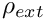, and a reference viscosity, 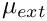. We can then define two dimensionless ratios, 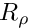 and 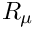, which describe a particular fluid's density  and kinematic viscosity
and kinematic viscosity  relative to these reference quantities:
relative to these reference quantities:
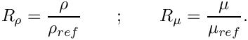
oomph-lib's implementation of the Navier–Stokes equations contains these ratios in the appropriate terms. They default to one but can be set to other values via the member functions density_ratio_pt() and viscosity_ratio_pt() in each element.
It is convenient to choose one of the fluids in this problem to be the ‘reference fluid’ on which the dimensionless parameters are based. We choose the lower fluid (fluid 1), and hence the density 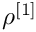 and viscosity 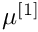 of this fluid are identically equal to 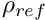 and  (and thus 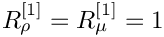). We can now control the relative density and viscosity of the upper fluid to the lower fluid using the ratios 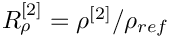 and 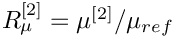 respectively. For simplicity we will from now on refer to
(and thus 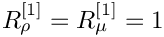). We can now control the relative density and viscosity of the upper fluid to the lower fluid using the ratios 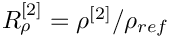 and 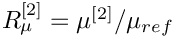 respectively. For simplicity we will from now on refer to ![$ R_\rho^{[2]} $](form_19.png) simply as and to 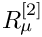 as .
simply as and to 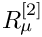 as .
The example problem
We will illustrate the solution of the unsteady two-dimensional Navier–Stokes equations using the example of a distorted interface between two viscous fluids which is allowed to relax. The domain is periodic in the  direction.
direction.
Solve
and
in the ‘lower’ fluid, and 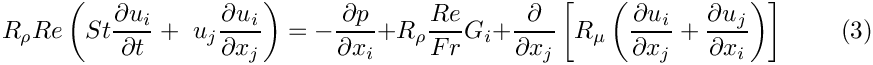 and 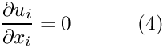 in the ‘upper’ fluid. Gravity acts in the negative 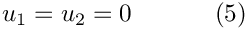 on the top ( 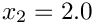) and bottom ( 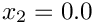) solid boundaries and the symmetry boundary conditions 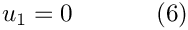 on the left ( 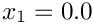) and right ( 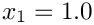) boundaries. We denote the position vector to the interface between the two fluids by , which is subject to the kinematic condition 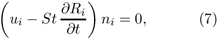 and the dynamic condition 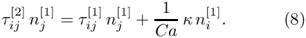 The stress tensor in the ‘lower’ fluid is defined as 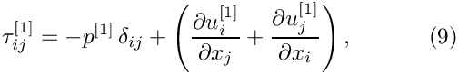 and that in the ‘upper’ fluid is defined as 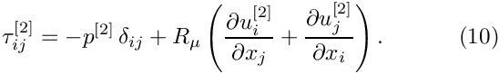 The initial shape of the interface is defined by 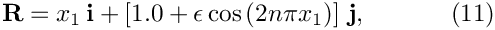 where |
![\[
Re\left(St\frac{\partial u_i}{\partial t} +
\ u_j\frac{\partial u_i}{\partial x_j}\right) =
- \frac{\partial p}{\partial x_i} + \frac{Re}{Fr}G_i +
\frac{\partial }{\partial x_j} \left[
\frac{\partial u_i}{\partial x_j} +
\frac{\partial u_j}{\partial x_i} \right]
\ \ \ \ \ \ \ \ \ \ (1)
\]](form_22.png)
![\[
\frac{\partial u_i}{\partial x_i} = 0
\ \ \ \ \ \ \ \ \ \ (2)
\]](form_23.png)
 is the amplitude of the initial deflection and 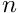 is an integer.
is the amplitude of the initial deflection and 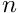 is an integer. Results
The figure below shows a contour plot of the pressure distribution taken from an animation of the flow field, for the parameters , 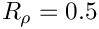, 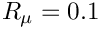 and .

The restoring forces of surface tension and gravitational acceleration act to revert the interface to its undeformed flat state. The interface oscillates up and down, but the motion is damped as the energy in the system is dissipated through viscous forces. Eventually the interface settles down to its equilibrium position, as can be seen in the following time-trace of the height of the interface at the left-hand edge of the domain (  ).
).
Validation
The free surface boundary conditions for the Cartesian Navier–Stokes equations have been validated against an analytical test case, and we present the results in the figure below. For sufficiently small amplitudes,  , we can linearise the governing equations and obtain a dispersion relation 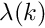, the derivation of which is discussed in the previous tutorial. The only difference in this two layer case is that the linear system which needs to be solved contains nine unknowns rather than five, since the two fluids have different properties. The real and imaginary parts of
, we can linearise the governing equations and obtain a dispersion relation 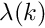, the derivation of which is discussed in the previous tutorial. The only difference in this two layer case is that the linear system which needs to be solved contains nine unknowns rather than five, since the two fluids have different properties. The real and imaginary parts of  correspond to the growth rate and the frequency of the oscillating interface respectively, and can be compared to numerical results computed for given values of the wavenumber 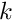. We choose an initial deflection amplitude of 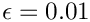 and determine the growth rate and frequency of the oscillation from a time-trace of the left-hand edge of the interface.
correspond to the growth rate and the frequency of the oscillating interface respectively, and can be compared to numerical results computed for given values of the wavenumber 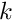. We choose an initial deflection amplitude of 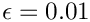 and determine the growth rate and frequency of the oscillation from a time-trace of the left-hand edge of the interface.
Global parameters and functions
As in the previous example, we use a namespace to define the dimensionless parameters  ,
,  , 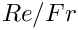 and . The pseudo-solid mesh is governed by a generalised Hookean constitutive law which requires the definition of the Poisson ratio,
, 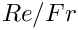 and . The pseudo-solid mesh is governed by a generalised Hookean constitutive law which requires the definition of the Poisson ratio,  , and we create a vector
, and we create a vector  which will define the direction in which gravity acts. Because this is a two-fluid problem, we also need to define the density ratio 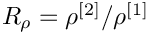 and viscosity ratio 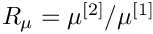 of the two fluids.
which will define the direction in which gravity acts. Because this is a two-fluid problem, we also need to define the density ratio 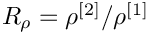 and viscosity ratio 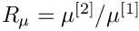 of the two fluids.
The driver code
The driver code is very similar to the previous example. We define a command line flag which allows us to run a ‘validation’ version of the code (for oomph-lib's self-testing routines) and check that the non-dimensional quantities provided in the Global_Physical_Variables namespace are self-consistent.
Next we specify the duration of the simulation and the size of the timestep. If we are running the code as a self-test, we set the length of the simulation such that only two timesteps are taken. The direction in which gravity acts is defined to be vertically downwards.
Finally, we build the problem using the ‘pseudo-solid’ version of RefineableQCrouzeixRaviartElements and the BDF<2> timestepper, before calling unsteady_run(...). This function solves the system at each timestep using the Problem::unsteady_newton_solve(...) function before documenting the result.
The mesh class
In the previous example we employed oomph-lib's ElasticRectangularQuadMesh. If we wanted to solve the same single-layer problem but with spatial adaptivity we would simply use that mesh's refineable counterpart, the ElasticRefineableRectangularQuadMesh. For this two-layer problem, however, it is convenient to define a new mesh class which contains an additional ‘boundary’ which corresponds to the interface between the two fluids. We start by defining the new class (which is templated by the element type) and inheriting from ElasticRefineableRectangularQuadMesh.
Next we define the mesh's constructor. We pass it the usual parameters, including a boolean flag which indicates whether or not the mesh is periodic in the  direction.
direction.
We have so far created an ElasticRefineableRectangularQuadMesh, which has four boundaries corresponding to the edges of our problem's domain. We wish to define a fifth boundary which corresponds to the interface position. First we set the number of boundaries to five and then convert all the Nodes which lie on the interface into BoundaryNodes. These are then added to the fifth boundary.
All that remains is to set up the boundary element information. This is required so that we can easily have access to the bulk elements either side of this new boundary.
The problem class
This is very similar to the problem class in the previous example, with a few modifications. Because we shall use spatial adaptivity when solving this problem, we define the following two functions, which will be called before and after mesh adaptation.
These two functions will employ two helper functions which are responsible for the creation and deletion of the interface elements.
The final modification to the problem class is the addition of a helper function which pins a pressure value in a specified element and assigns a specific value.
The problem constructor
The constructor starts by building the timestepper and setting the dimensions of the mesh. The number of elements in the and  directions in both fluid layers are specified.
directions in both fluid layers are specified.
Next we build the bulk mesh, create an error estimator for the problem and set the maximum refinement level.
An empty surface mesh is created and then populated with a call to create_interface_elements(). The bulk and surface meshes are then combined to form the global mesh.
On the top and bottom boundaries ( 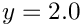 and 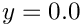) we apply the no-slip condition by pinning both velocity components. On the left and right symmetry boundaries (  and 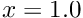) we pin the component of the velocity but leave the
and 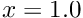) we pin the component of the velocity but leave the  component unconstrained. We pin the vertical displacement of the nodes on the solid boundaries (since these must remain stationary) and pin the horizontal displacement of all nodes in the mesh.
component unconstrained. We pin the vertical displacement of the nodes on the solid boundaries (since these must remain stationary) and pin the horizontal displacement of all nodes in the mesh.
Next we create a generalised Hookean constitutive equation for the pseudo-solid mesh. This constitutive equation is discussed in another tutorial.
We loop over the bulk elements in the lower fluid and pass them pointers to the Reynolds and Womersley numbers, and  , the product of the Reynolds number and the inverse of the Froude number, , the direction of gravity, , the constitutive law and the global time object, created when we called
, the product of the Reynolds number and the inverse of the Froude number, , the direction of gravity, , the constitutive law and the global time object, created when we called Problem::add_time_stepper_pt(...) above. Note that we do not assign pointers for the viscosity and density ratios, and 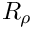, since these take the default value in the lower fluid.
We then do the same for the bulk elements in the upper fluid, and this time we do assign pointers for the viscosity and density ratios.
We then pin one pressure degree of freedom.
At this point we set up the boundary conditions.
Finally, we set up the equation numbering scheme.
Initial conditions
The set_initial_conditions() function is identical to that in the previous example.
Boundary conditions
The set_boundary_conditions() function is very similar to that in the previous example.
Actions before adaptation
The mesh adaptation is driven by the error estimates in the bulk elements and only performed for that mesh. The interface elements must therefore be removed before adaptation. We do this by calling the function delete_interface_elements(), and then rebuilding the Problem's global mesh.
Actions after adapt
After the bulk mesh has been adapted we must create new interface elements and rebuild the problem's global mesh. Any newly-created boundary nodes will automatically have the appropriate boundary conditions applied; however, we must remember to pin the horizontal displacement of all nodes throughout the bulk of the domain.
To ensure that precisely one fluid pressure degree of freedom is pinned, we unpin all pressure degrees of freedom, pin any redundant nodal pressures which have arisen following mesh adaptation and call fix_pressure(...). We also pin any redundant solid pressures before re-setting the boundary conditions.
Create interface elements
This function is used to ‘attach’ interface elements to the upper face of those bulk elements in the lower fluid which are adjacent to the interface. Firstly, we loop over all bulk elements (in either fluid) which are adjacent to the interface.
In order to determine whether the bulk element we are currently looking at is in the upper or lower fluid, we check to see whether that element's viscosity_ratio_pt is pointing to the address of Global_Physical_Variables::Viscosity_Ratio. If it is, then that bulk element is in the upper fluid, and we ignore it. Otherwise, we determine the face of the bulk element that corresponds to the interface and create an interface element on that face. The newly-created element is then added to the surface mesh.
Finally, we pass the Strouhal and Capillary numbers to the interface elements.
Delete interface elements
This function loops over all the interface elements (i.e. those in the surface mesh) and deletes them and their storage.
Prescribing the initial free surface position
At the beginning of the simulation the interface is deformed by a prescribed function (11), implemented in the function deform_free_surface(...), which cycles through the bulk mesh's Nodes and modifies their positions such that the nodes on the free surface follow the prescribed interface shape and the bulk nodes retain their fractional position between the solid boundaries and the (now deformed) interface.
Post-processing
This function is identical to that in the previous example.
The timestepping loop
The function unsteady_run(...) is used to perform the timestepping procedure, and is very similar to that in the previous example. The only changes arise due to this problem being solved with spatial adaptivity. We start by deforming the interface in the manner specified by equation (11).
We then create a DocInfo object to store the output directory and the label for the output files.
Next we open and initialise the trace file.
Before using any of oomph-lib's timestepping functions, the timestep  must be passed to the problem's timestepping routines by calling the function
must be passed to the problem's timestepping routines by calling the function Problem::initialise_dt(...) which sets the weights for all timesteppers in the problem. Next we assign the initial conditions by calling Problem::set_initial_condition(), which was discussed above.
We limit number of spatial adaptations per timestep to two and refine the problem uniformly twice, before documenting the initial conditions.
Finally, we determine the number of timesteps to be performed and perform the actual timestepping loop. For each timestep the function unsteady_newton_solve(dt,max_adapt,first_timestep) is called and the solution documented. The boolean flag first_timestep is used to instruct the code to re-assign the initial conditions after every mesh adaptation. After the first timestep, the maximum number of adaptations for all timesteps is reset to one. We refer to another example for a discussion of why this is recommended.
Comments
- Since the problem discussed in this example has the fluid velocity prescribed along the entire domain boundary, the fluid pressure is only determined up to an arbitrary constant and hence we fix the pressure at a single point in the domain. However, it is worth noting that in the case of Crouzeix–Raviart elements being used in a problem with spatial adaptivity the notion of a fixed pressure is slightly subtle. In this example we fix the first pressure value of the first element in the mesh to zero, which in the case of Crouzeix–Raviart elements means that we fix the average value of the pressure to zero in this element. Were this element to be refined, however, we would then be imposing a zero pressure elsewhere in the domain, causing the entire pressure field to ‘jump’ from one timestep to the next. Since the problem is incompressible this would not affect the computed velocity fields, but could lead to some confusion when studying the time evolution of the pressure field.
Exercises
- In the single-layer example we chose to discretise the problem using Crouzeix–Raviart elements, but we could also have chosen to use Taylor–Hood elements. Why can we not use Taylor–Hood elements to solve this two-layer problem?
- What happens if we do not call
setup_boundary_element_info()in the mesh constructor? Why is this?
Source files for this tutorial
- The source files for this tutorial are located in the directory:
demo_drivers/navier_stokes/two_layer_interface/ - The driver code is:
demo_drivers/navier_stokes/two_layer_interface/elastic_two_layer_interface.cc
PDF file
A pdf version of this document is available. \